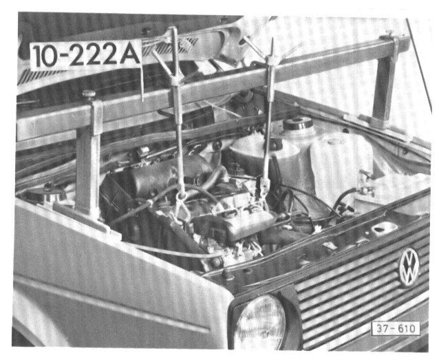
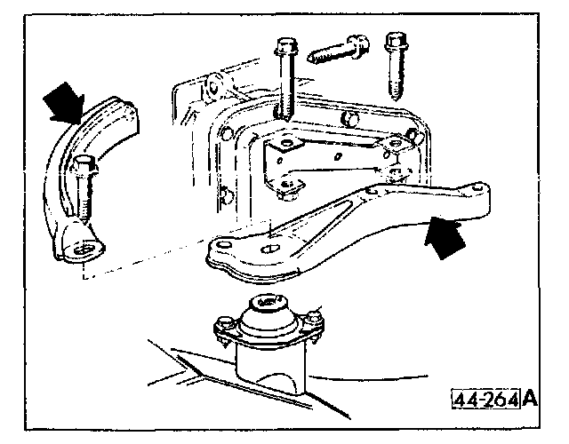
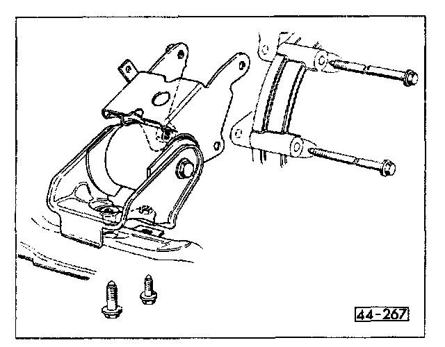
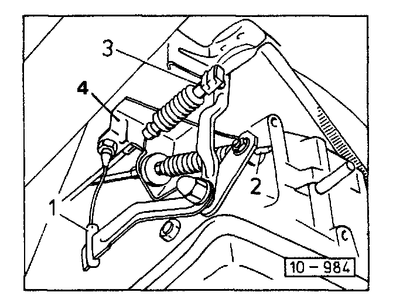

Transmission, Removal / Installation
Transmission, removing/installingRemoving
- remove left and right axle shaft nuts
- remove both front wheels
- disconnect battery ground cable
- disconnect speedometer cable at transmission

- install engine support bridge 1O-222A
- remove left rear transmission mount and support (arrows)
- remove upper engine/transmission bolts

- remove upper bolts in front engine/transmission mount
- remove bolt holding coolant pipe to front engine/transmission mount
- raise vehicle
- remove lower bolts in front mount and remove mount complete
- remove protective plate from transmission
Front Engine / Transmission Mount (Early Version):

- remove upper bolts in front engine/transmission mount (arrows)
- remove bolt holding coolant pipe to front engine/transmission mount
- raise vehicle
- remove lower bolts in front mount and remove mount complete
- remove protective plate from transmission
Front Engine / Transmission Mount (Late Version):

- disconnect selector 2 and accelerator cables 1 and 3 from levers on transmission and remove support bracket 4 with cables attached
- remove bolts holding left and right axle shafts to transmission drive flanges
- separate ball joint and wheel bearing housing on right and left sides and remove axle shafts
- remove right rear engine mount complete
- remove starter heat shield and brackets
- disconnect starter wiring
- remove starter
- remove flywheel/torque converter bolts
- remove subframe mounting bolts and allow subframe to hang tree
- support transmission using suitable transmission jack

- remove lower mounting bolt and carefully lower transmission out of vehicle
Installing
Proceed in reverse order of removal and note the following:
- install all engine/transmission mounting bolts first
- adjust accelerator cable when installing new transmission